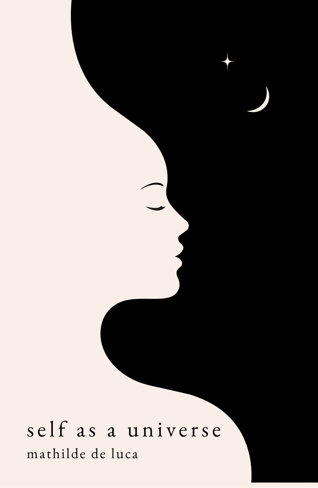

self as a universe
What if the universe you've been searching for was already inside you?

A collection of poetry and reflections where the personal becomes universal, self as a universe explores identity, conditioning, consciousness, love, and the journey back to yourself.
ISBN 9798199299367
Essays & newsletter
Essays on the invisible structures that shape us: the roles we inherit, the stories we repeat, the fears we call intuition, the identities we build to be loved, accepted, or safe.
Pick a card, read an essay.
The podcast
A podcast for those who question, explore, and wonder about what it means to be human. Here, philosophy meets everyday life. Together we explore what we believe, how we love, what freedom really means, and who we are. Some episodes are reflections and others are immersions.
Offerings
A few ways we can meet, think, write, and explore together.
- Book Readings
Readings from self as a universe, followed by open conversations on its themes.
- Philosophy Talks
Talks on consciousness, conditioning, freedom, and the invisible structures that shape our lives, followed by philosophical conversations and Q&A.
- Writing Workshops
Writing workshops for self-inquiry, creativity, and inner exploration through intuitive writing, reflective prompts, and guided exercises.
- Maison Amour Collective
Creative gatherings with different themes: art & jam, writers’ dinners, ecstatic dance… Born on the island of Koh Phangan, now hosted around the world.
@maisonamour.collective - 1:1 Sessions
One-to-one sessions to explore your inner world, uncover unconscious patterns, and reconnect with clarity and authenticity.
Message me on WhatsApp
Questions, collaborations, or speaking inquiries? I'd love to hear from you.
For updates on events & new projects,
join the WhatsApp community or follow me on Instagram.
I'm Mathilde De Luca, an author & speaker from France. I write and speak about the invisible structures that shape us: the roles we inherit, the stories we repeat, the fears we call intuition, the identities we build to be loved, accepted, or safe.
My work stands at the intersection of psychology, philosophy, lived experience and ancient wisdom. It is an invitation to make the unconscious conscious, and to walk from conditioning to freedom.
Former scientist, forever student, now exploring what it means to be human.
- Through words · essays, poetry, novels
- Through voice · podcast, talks, keynotes
- Through presence · workshops, dinners, retreats, Maison Amour Collective